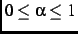
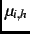
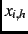
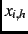

Next: Definitions of Empirical Choice
Up: Coordination and Policy Moderation
Previous: A Coordinating Model for
To test further whether electors coordinate, we define an empirical model that
applies to midterm elections the core idea in Fiorina's (1988; 1992, 73-81)
nonstrategic theory of institutional balancing by voters in presidential-year
elections. Fiorina's theory considers a situation in which there are two
parties. Each voter has a choice between two candidates for president and two
candidates for the legislature, one from each party. The core idea of the
theory is that each voter chooses candidates based on the mix of party control
of the presidency and the legislature, either unified or divided government,
that would produce a policy outcome nearest the elector's ideal point. In so
choosing, it does not matter to the voter how likely it is that the Democratic
presidential candidate will win, nor does the voter care what the Democratic
party's share of the legislature is likely to be. That the voter ignores the
expected election outcome is what makes the theory not a theory of strategic
behavior: no voter's choice depends on the choice or likely choice of any
other voter.
We apply the core idea of Fiorina's theory to midterm elections by assuming
that at midterm each elector with
 treats the party of the
president as fixed in forming a preference between unified or divided
government, but otherwise ignores the expected election outcome. Using the
party policy positions
treats the party of the
president as fixed in forming a preference between unified or divided
government, but otherwise ignores the expected election outcome. Using the
party policy positions
 and
and
 defined in
(1) and (2), the post-election policies expects if
there is a Democratic majority in the House are:
defined in
(1) and (2), the post-election policies expects if
there is a Democratic majority in the House are:
and the post-election policies expects if there is a Republican majority
are:
with
. The nonstrategic theory says that, other things
equal, votes for the Democrat instead of the Republican if 's ideal
point is closer to the policy expected with a Democratic majority than to the
policy expected with a Republican majority, i.e., if
. If
, then
votes for the Republican instead of the Democrat.
In the nonstrategic model there is policy moderation only if
.
If  , post-election policy always equals the position of the
president's party; the equality
always holds, so policy comparisons have no
effect on midterm vote choices. If , the president is irrelevant to
post-election policy;
and
regardless of who is president. The
comparison between
and
reduces to a comparison between
and
, post-election policy always equals the position of the
president's party; the equality
always holds, so policy comparisons have no
effect on midterm vote choices. If , the president is irrelevant to
post-election policy;
and
regardless of who is president. The
comparison between
and
reduces to a comparison between
and
 . There is no
moderation but rather a simple choice between the parties' alternative
policies.
. There is no
moderation but rather a simple choice between the parties' alternative
policies.
To let the nonstrategic model include the possibility of not voting, we use
the log-likelihood function of (14), with  defined by
(10) and  in the form of (13), based on modified
definitions of ,
in the form of (13), based on modified
definitions of ,  . Defining:
. Defining:
with
 , we define:
, we define:
with
. If , then
and
.
We use a nonnested hypothesis test derived by Vuong (1989) to compare the
coordinating model to the nonstrategic model.footnote The models may fit the
observed choices about equally well in terms of LR statistics because  and have the same sign if the expected post-election policy in the
coordinating model equals the average of the post-election policies expected
in the nonstrategic model, that is, if
.
and have the same sign if the expected post-election policy in the
coordinating model equals the average of the post-election policies expected
in the nonstrategic model, that is, if
.
Next: Definitions of Empirical Choice
Up: Coordination and Policy Moderation
Previous: A Coordinating Model for
Jasjeet S. Sekhon
2001-06-28